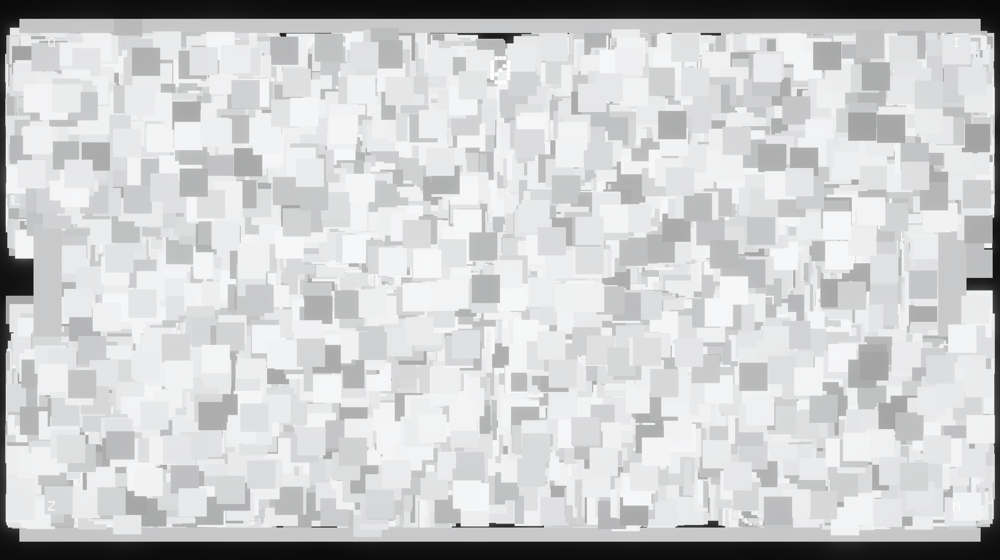
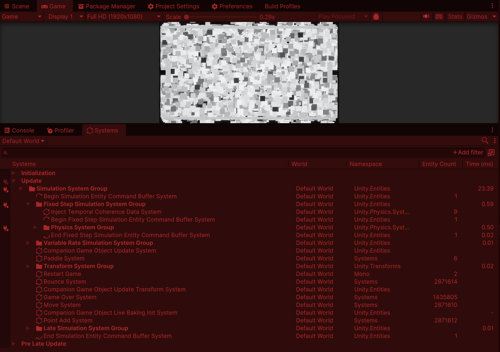

InfiniPong
A study on what happens when you optimize a little too much

As a refresher into Unity ECS, I made the simplest game I could think of, Pong. Then, to test my knowledge, I got it to spawn two new balls every time a point was scored. This lead to a cascade event, where 2 became 10, 10 quickly turned into 100, then 1000, and finally hitting 2.8 MILLION before hitting my 24fps floor.
The project was built in Unity ECS. All systems that run on multiple entities per frame have been jobified and Burst compiled. Every structural change possible has been replaced with enableable components, and both forms of entity manipulation have been batched for the fastest possible state changes.
Then, the GPU became a bottleneck, so I gave all materials batches, to minimize draw calls, offset every entity by a random amount forward and back to put them on top of each other, and turned on fulstrum culling to not draw the balls at the back.
After that, all issues are structural to Unity and my PC, and I would need to rewrite the entire thing natively to get better results.
Screenshots
